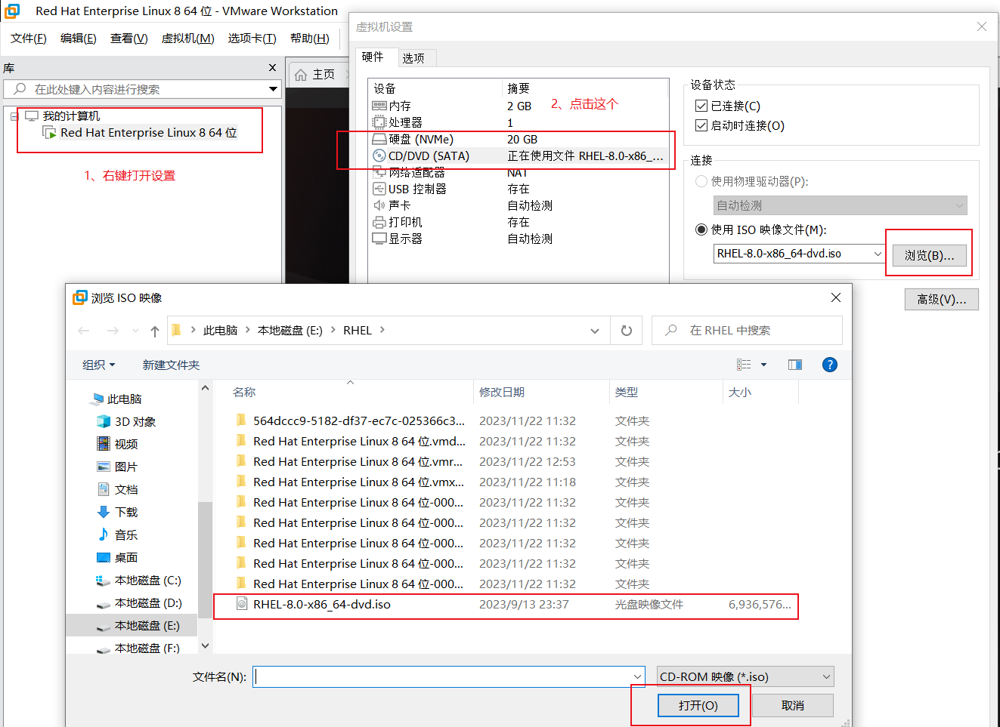
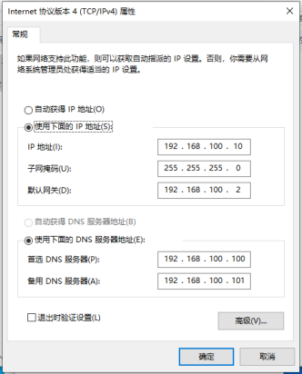

命令查询网站：点击跳转到该网站
一定要注意关联上下文信息进行阅读、操作
推荐几个在主机上方便操作 Linux 服务器的软件：
XShell、WindTerm、FinalShell
fdisk命令中的参数及其作用
| 参数 | 作用 |
|---|---|
| m | 查看全部可用的参数（帮忙信息） |
| n | 添加新的分区 |
| d | 删除某个分区信息 |
| l | 列出所有可用的分区类型 |
| t | 改变某个分区的类型 |
| p | 查看分区信息 |
| w | 保存并退出 |
| q | 不保存直接退出 |
这一步操作，相当于把实际硬盘设备变成linux中的类似window上的某个盘符，之后我们就可以在此盘符里面存放东西啦
插入磁盘成功后，ls /dev 查看新添加的磁盘叫什么
找到磁盘名称后，对其进行操作
xxxxxxxxxx11$ fdisk /dev/nvme0n2 # fdisk是交互式命令，这里进入交互界面进入交互命令行，对其分区进行配置
xxxxxxxxxx31$ >n # 开始分区2$ >p # 查看分区详细信息3$ >w # 此时配置是在内存中保存着，需要写入文件保存，并退出
查看设备文件的属性
xxxxxxxxxx31$ file /dev/nvme0n2p1 # 查看主分区1设备文件信息2$ partprobe # 如果系统还没有自动把分区信息同步给Linux内核3$ partprobe # 通过这个命令手动同步分区信息到内核，推荐连续两次
不格式化磁盘的话，系统不知道怎么写入数据，所以格式化就是把该段磁盘中的内容全部清空，系统会重置写入数据的起始位置，并用指定的文件系统对其进行规划。
xxxxxxxxxx21$ mkfs.xfs /dev/nvme0n2p12$ mkfs -t ext4 -c /dev/md0
将这个分区挂载到我们的系统中。Linux中，万物皆文件，所以挂载分区到我们的系统中就是相当于window上多了一个盘符的概念。之后可以在该盘符中创建内容了。
xxxxxxxxxx31$ mkdir /mysite # 创建一个目录2$ mount /dev/nvme0n2p1 /mysite # 将我们创建的目录挂载到这次磁盘分区上，以后写入这个文件中的内容就都存储在这个分区上啦，这里是将目录与磁盘分区进行关联的操作3$ df -h # 查看磁盘使用情况，会列出磁盘使用率等详细信息
mount命令中的参数及其作用
该命令是对临时插入的磁盘文件进行挂载并能够立即挂在完成进行使用，一旦重启后就失效了。需要重新对我们的文件夹目录与之关联。
| 参数 | 作用 |
|---|---|
| -a | 挂载所有在 /etc/fstab 中定义的文件系统 |
| -t | 指定文件系统的类型 |
编辑 => /etc/fstab 自动挂载分区
mount是临时挂载临时使用，每次重启开机了就需要重新挂载，显然不方便
这里介绍的就是修改 『系统配置文件』来使目录与挂载点一直关联，就算重启了也不要再进行挂载操作。这就方便使用多了。
该文件中的字段有『设备文件 挂载目录 格式类型 权限选项 是否备份 是否自检』
用于挂载信息的指定填写格式中，各字段所表示的含义
| 字段 | 意义 |
|---|---|
| 设备文件 | 一般为设备的路径+设备名称，也可以写唯一的识别码（UUID） |
| 挂载目录 | 指定要挂载到的目录，需在挂载前创建好 |
| 格式类型 | 指定文件系统的格式，比如 ext3、ext4、xfs、swap、iso9660 |
| 权限选项 | 若设置为defaults，则默认权限为rw，suid，dev，exec，auto，nouser，async |
| 是否备份 | 若为1则开机后使用dump进行磁盘备份，为0则不备份 |
| 是否自检 | 若为1则开机后自动进行磁盘自检，为0则不自检 |
挂载分区，就是将我们的文件目录与磁盘分区进行关联的动作；
卸载分区，就是将我们的文件目录与磁盘分区进行取消关联的动作，不再占用磁盘设备的资源。
卸载操作，只需要取消关联的一方即可。比如上面的磁盘分区 和 /mysite 进行的关联，我们只需要取消任意一方的关联，即可完成卸载的操作。
xxxxxxxxxx31$ umount /mysite # 第一种方式2$ umount /dev/nvme0n2p1 # 第二种方式 这两种方式都行，任选其一3$ df -h # 此时，再查看磁盘使用情况，我们的 /mysite目录 和 /dev/nvme0n2p1就没有出现在我们的资源管理列表中啦，说明我们对此磁盘文件不再占用
用于查看文件数据占用量
xxxxxxxxxx21$ cp -rf /etc/* /mysite/ # 将/etc/下面的所有文件复制到/mysite/中去2$ du -sh /mysite # 查看文件数据存储占用容量| 参数 | 作用 |
|---|---|
| -a | 列出所有的文件与目录容量，因为默认仅统计目录底下的文件量而以 |
| -h | 以人们较易阅读的容量格式（G/M）显示 |
| -s | 列出总量而以，而不列出每个各自的目录占用容量 |
| -S | 不包括子目录下的总计，与 -s 有点差别 |
| -k | 以 KBytes 列出容量显示 |
| -m | 以 MBytes 列出容量显示 |
作用：列出文件系统的整体磁盘使用量
| 参数 | 作用 |
|---|---|
| -a | 列出所有的文件系统，包括系统特有的 /proc 等文件系统 |
| -k | 以 KBytes 的容量显示各文件系统 |
| -m | 以 MBytes 的容量显示各文件系统 |
| -h | 以人们较易阅读的GBytes、MBytes、KBytes等格式自行显示 |
| -H | 以M=1000K 取代 M=1024K的进位方式 |
| -T | 显示文件系统类型，连同该partition的filesystem名称（例如ext3）也列出 |
| -i | 不用硬盘容量，而以inode的数量来显示 |
简单说明：规定一个文件夹所能占用的存储容量大小，当达到该容量大小时就不允许再往里面存放内容了。这种功能对磁盘空间分配给某些工作人员多少存储容量很有必要。这能够很好的管理、规划我们的存储设备资源。
xxxxxxxxxx11$ mount | grep opt # 看是否已经成功挂载并显示该文件系统的相关信息xxxxxxxxxx21$ useradd tom2$ chmod -Rf o+w /optxfs_quota命令是一个专门针对XFS文件系统来管理quota磁盘容量配额服务而设计的命令，语法格式为：xfs_quota [参数] 配额 文件系统
其中 -c 参数用于以参数的形式设置要执行的命令；-x参数是专家模式，让运维人员能够对quota服务进行更多复杂的配置
xxxxxxxxxx61# 下面这段对 目录文件 /opt 进行 『软配额限制』 和 『硬配额限制』，最后指定是哪个运维用户人员2$ xfs_quota -x -c 'limit bsoft=3m bhard=6m isoft=3 ihard=6 tom' /opt3# 报错：xfs_quota: cannot set limits: Function not implemented4# 将 /etc/fstab 文件中的配置修改为如下内容 并 用命令 reboot 重启：5# 注意这是第二块分区了，前面磁盘分区演示的是 第一块分区6# /dev/nvme0n2p2 /opt xfs defaults,uquota 0 0xxxxxxxxxx21# 查看配额详情2$ xfs_quota -x -c report /opt
edquota命令用于编辑用户的quota配额限制，语法格式：edquota [参数] [用户]
| 参数 | 作用 |
|---|---|
| -u | 表示要针对哪个用户进行设置 |
| -g | 表示要针对哪个用户组进行设置 |
edquota会调用vim编辑器来让root管理员修改要限制的具体细节
xxxxxxxxxx11$ edquota -u tom # 对tom的配额进行编辑更改
①具备前面的硬盘设备管理基础后，再来部署RAID和LVM就变得十分轻松了。
②首先在虚拟机中添加4块硬盘设备来制作一个RAID5磁盘阵列。
③要关闭系统之后才能进行配置，否则可能会因为计算机架构的不同而导致虚拟机系统无法识别添加的硬盘设备。
『mdadm』命令用于管理Linux系统中的软件RAID硬盘阵列，
语法格式：mdadm [模式] <RAID设备名称> [选项] [成员设备名称]
mdadm命令的常用参数及其作用
| 参数 | 作用 |
|---|---|
| -a | 检测设备名称 |
| -n | 指定设备数量 |
| -x | 空闲（备用）盘数量 |
| -l | 指定RAID级别 |
| -C | 创建 |
| -v | 显示过程 |
| -f | 模拟设备损坏 |
| -r | 移除设备 |
| -Q | 查看摘要信息 |
| -D | 查看详细信息 |
| -S | 停止RAID磁盘阵列 |
按照磁盘分区的知识来即可，提示： fdisk [磁盘名]
xxxxxxxxxx11$ mdadm --create /dev/md0 -l 5 -n 3 -x 1 /dev/nvme0n[3-6]p1
xxxxxxxxxx11$ mkfs -t ext4 -c /dev/md0
xxxxxxxxxx11$ mdadm --detail /dev/md0
xxxxxxxxxx31$ mkdir /RAID2$ mount /dev/md0 /RAID3$ df -h
当RAID磁盘阵列中某一磁盘成员损坏后该如何处理呢？当发现磁盘阵列中有一块硬盘设备出现损坏而不能继续正常使用后，应当使用命令mdadm将其移除，然后查看RAID磁盘阵列的状态，可以发现状态已经改变。
这里我们模拟是 nvme0n4p1损坏
①将损坏的RAID成员标记为失效
xxxxxxxxxx11$ mdadm /dev/md0 --fail /dev/nvme0n4p1②移除失效的成员
xxxxxxxxxx11$ mdadm /dev/md0 --remove /dev/nvme0n4p1③更换硬盘设备，更换一个新的RAID成员
xxxxxxxxxx11mdadm /dev/md0 --add /dev/nvme0n7p1 # 之前的硬盘编号时 3-6，这是新添加的（7号）硬盘的第一分区加入磁盘阵列中来（这里作为演示，我就继续将之前移除的重新添加进来了）
概念：新添加的两块硬盘设备本来毫无关联，但Linux中存在这样一种技术，能够让两块硬盘设备关联起来，像一块存储磁盘一样使用。单个的硬盘在该技术上的概念叫做物理卷，两块及两块以上的硬盘设备要关联起来的形式就叫做卷组，意思是合并成组当整体来使用，卷组的名称可以由用户自定义，将卷组看成一个整体，可以对它进行切割，切割出来的一部分就叫做逻辑卷。最后把这个逻辑卷设备格式化成EXT4文件系统后挂载使用。
1、部署逻辑卷
①第一步：让新添加的两块硬盘设备支持LVM技术
xxxxxxxxxx11$ pvcreate /dev/nvme0n7 /dev/nvme0n8
②第二步：把两块硬盘设备加入storage卷组中，然后查看卷组的状态
xxxxxxxxxx21$ vgcreate storage /dev/nvme0n7 /dev/nvme0n82# vgcreate 卷组名 /dev/设备1 /dev/设备2
③第三步：切割出一个约为150MB的逻辑卷设备
切割单位有两种计量单位：第一种以容量为单位，所使用的参数为 -L 参数，例如 -L 150MB 生成一个大小为150MB的逻辑卷；
第二种是以基本单元的个数为单位，所使用的参数为 -l 。每个基本单元的大小默认为4MB。例如 -l 37 可以生成一个大小为 37 × 4MB = 148MB的逻辑卷组。
xxxxxxxxxx11$ lvcreate -n vo -l 37 storagexxxxxxxxxx21# 创建完成后，可以查看逻辑卷的详细信息2$ lvdisplay
④第四步：把生成好的逻辑卷进行格式化，然后挂载使用
xxxxxxxxxx11$ mkfs.ext4 /dev/storage/voxxxxxxxxxx21$ mkdir /myTmp2$ mount /dev/storage/vo /myTmp
⑤第五步：查看挂载状态，并写入配置文件，使其永久生效
xxxxxxxxxx11$ df -hxxxxxxxxxx11$ echo "/dev/storage/vo /myTmp ext4 defaults 0 0" >> /etc/fstab
卷组是由多块硬盘设备共同组成，用户在使用存储设备时感知不到设备底层的架构和布局，更不用关心底层是由多少块硬盘组成的，只要卷组中有足够的资源，就可以一直为逻辑卷扩容。扩展前请一定要记得卸载 设备和挂载点的 关联。
①卸载设备和挂载点的关联，并把上一个实验中的逻辑卷vo扩展至290MB
xxxxxxxxxx21$ umount /myTmp2$ lvextend -L 290M /dev/storage/vo
②检查硬盘完整性，并重置硬盘容量
xxxxxxxxxx21$ e2fsck -f /dev/storage/vo # 检查完整性2$ resize2fs /dev/storage/vo # 重置硬盘容量
③重新挂载硬盘设备并查看挂载状态
xxxxxxxxxx21$ mount -a # 重新挂载 /etc/fstab 文件中提及的所有挂载点2$ df -h # 查看挂载状态
相较于扩容逻辑卷，在对逻辑卷进行缩容操作时，其丢失数据的风险更大。所以一定要记得备份好数据。另外Linux系统规定，在对LVM逻辑卷进行缩容操作之前，首先检查文件系统的完整性（当然这也是为了保证我们的数据安全）。在执行缩容操作前记得先把文件系统卸载掉。
xxxxxxxxxx11$ umount /myTmp
①检查文件系统的完整性
xxxxxxxxxx11$ e2fsck -f /dev/storage/vo # 检查完整性
②把逻辑卷vo的容量减小到120MB
xxxxxxxxxx21$ resize2fs /dev/storage/vo 120M # 重置硬盘容量2$ lvreduce -L 120M /dev/storage/vo
③重新挂载文件系统并查看系统状态
xxxxxxxxxx21$ mount -a # 将 /etc/fstab里面的挂载内容全部执行一遍，让其挂载点重新生效2$ df -h # 查看挂载状态
LVM具备『快照卷』 功能，功能类似虚拟机的快照功能。如果发现数据被改错了，就可以利用之前做好的快照卷进行还原覆盖。
快照卷功能有两个特点：
① 快照卷的容量必须等同于逻辑卷的容量。
② 快照卷仅一次有效，一旦执行还原操作后则会立即被自动删除。
首先查看卷组信息
xxxxxxxxxx11$ vgdisplay① 第一步：使用 -s 参数生成一个快照卷，使用 -L 参数指定切割的大小。另外还需要在命令后面写上是针对哪个逻辑卷执行的快照操作
xxxxxxxxxx21$ lvcreate -L 120M -s -n SNAP /dev/storage/vo2$ lvdisplay
② 第二步：在逻辑卷所挂载的目录中创建一个100MB的垃圾文件，然后再查看快照卷的状态。可以发现存储空间的用量上升了。
xxxxxxxxxx11$ vgdisplay
③ 第三步：为了校验SNAP快照卷的效果，需要对逻辑卷进行快照还原操作。在此之前记得先卸载掉逻辑卷设备与目录的挂载。
xxxxxxxxxx21$ dd if=/dev/zero of=/myTmp/files bs=100M # 制造100M的垃圾信息2$ lvdisplay # 查看逻辑卷状态信息
④ 第四步：快照卷会被自动删除掉，并且刚刚在逻辑卷设备被执行快照操作后再创建出来的100MB的垃圾文件也被清除了
xxxxxxxxxx21$ mount -a2$ ls /myTmp/
当生产环境中想要重新部署LVM或者不再需要使用LVM时，则需要执行LVM的删除操作。为此，需要提前备份好重要的数据信息，然后依次删除逻辑卷、卷组、物理卷设备，这个顺序不可颠倒！
① 第一步：取消逻辑卷与目录的挂载关联，删除配置文件中永久生效的设备参数
xxxxxxxxxx21$ umount /myTmp2$ vim /etc/fstab # 将对应的逻辑卷与目录挂载关联的数据行内容删除掉
② 第二步：删除逻辑卷设备，需要输入y来确认操作
xxxxxxxxxx11$ lvremove /dev/storage/vo # 需要进行确认操作，按y确认
③ 第三步：删除卷组，此处只写卷组名称即可，不需要设备的绝对路径
xxxxxxxxxx11$ vgremove storage
④ 第四步：删除物理卷设备
xxxxxxxxxx11$ pvremove /dev/nvme0n7 /dev/nvme0n8再执行 lvdisplay、vgdisplay、pvdisplay命令来查看LVM的信息时就不会再看到信息了（前提是以上步骤都是正确的）
命名格式：软件名-版本号-释出号.体系号.rpm
（1）FTP方式的命名格式
xxxxxxxxxx11命名格式：ftp://[用户名 [:密码] @] 主机 [:端口]/包文件用户安装这类RPM软件包，必须使用如下命令：
xxxxxxxxxx31$ rpm -ivh ftp://ftp.xxx.com/yyy.rpm2# 或者3$ rpm -ivh ftp://11.22.33.44:1100/pub/yyy.rpm
（2）HTTP方式的命名格式
xxxxxxxxxx11http://主机 [:端口]/包文件用户安装这类RPM软件包，必须使用如下命令：
xxxxxxxxxx11$ rpm -ivh http://www.xxx.com/yyy.rpm
xxxxxxxxxx11$ rpm -ivh xxx.rpm # 下载某个网站资源中的 .rpm 包到当前路径下xxxxxxxxxx31$ rpm -e 软件名2# 如果使用 -e 选项时是不能删除的，那么就添加选项 --nodeps （不检查依赖关系）进行删除3$ $ rpm -e --nodeps 软件名
在 Red Hat Enterprise Linux（RHEL 从 5.0 版本开始采用 YUM）、CentOS 和 Fedora 等发行版本中，采用了一种叫做 YUM 的软件包管理工具。YUM（Yellow dog Updater Modified）用 python 语言写成。YUM 的宗旨是收集 RPM 软件包的相关信息，检查依赖关系，自动化地升级、安装、删除 RPM 软件包。
YUM 的 repository （仓库）可以是 http 或 ftp 站点，也可以是 本地软件池，但必须包含 RPM 的 header，header 包括了 RPM 包的各种信息，包括描述、功能、提供的文件、依赖性等。正是收集了这些 header 并加以分析，才能自动化地完成升级、安装软件包等任务。
| 命令 | 功能 |
|---|---|
| yum install 包名 | 安装指定的软件 |
| yum lcalinstall 软件名 | 安装本地已经下载的软件包 |
| yum goupinstall 组名 | 如果仓库为软件包分了组，则可以通过安装此组来完成安装这个组里面的所有软件包 |
| yum [-y] install 包名 | 安装指定的软件，对于过程中需要确认的询问全部回答 yes |
| yum [-y] remove 包名 | 删除指定的软件，YUM会检查repository给出解决依赖关系的提示 |
| yum [-y] erase 包名 | 删除指定的软件 |
| yum groupremove 组名 | 卸载组里面所包括的软件包 |
| 命令 | 功能 |
|---|---|
| yum check update | 检查可升级的 RPM 包 |
| yum update | 升级所有可以升级的 RPM 包 |
| yum update kernel kernel-source | 升级指定的 RPM 包，如升级 kernel 和 kernel source |
| yum -y update 软件包 | 升级所有的可升级的软件包， -y 表示同意所有，不用一次次确认，避免回答一些问题 |
| yum upgrade | 大规模的版本升级。与 yum update 不同的是，连旧的淘汰的包也升级 |
| yum groupupdate 组名 | 升级组里面的软件包 |
| yum update 包名 | 仅升级指定的软件 |
| 命令 | 功能 |
|---|---|
| yum search 关键词 | 搜索匹配特定字符的 RPM 包 |
| yum list | 列出资源库（YUM repository）中所有可以安装或更新的 RPM 包 |
| yum list updates | 列出资源库中所有可以更新的 RPM 包 |
| yum list installed | 列出所有已安装的 RPM 包 |
| yum list extras | 列出所有已安装但不在资源库中的软件包 |
| yum list 包名 | 列出所指定的软件包 |
| yum deplist 软件名 | 显示程序组信息 |
| yum info 包名 | 使用YUM获取软件包信息 |
| yum info | 列出资源库中所有可以安装或更新的 RPM 包的信息 |
| yum info updates | 列出资源库中所有可以更新的 RPM 包的信息 |
| yum info installed | 列出所有已安装的软件包的信息 |
| yum info extras | 列出所有已安装但不在资源库中的软件包信息 |
| yum provides 包名 | 列出软件包提供那些文件 |
| 命令 | 功能 |
|---|---|
| yum clean packages | 清除缓存目录（/var/cache/yum）下的 RPM 软件包 |
| yum clean headers | 清除缓存目录下的 RPM 头文件 |
| yum clean oldheaders | 清除缓存目录下旧的 RPM 头文件 |
| yum clean, yum clean all | 清除缓存目录下的 RPM 软件包以及旧的 RPM 头文件 |
RHEL-8.0-x86_64-dvd.iso安装系统时的那个镜像文件，它里面就包含了很多系统安装需要自带的一些安装包，在这里可以拿它来模拟一个本地源仓库

xxxxxxxxxx81$ mkdir /mnt/iso # 创建一个挂载的目录2$ mount /dev/cdrom /mnt/iso # 挂载的光驱就是 /dev/cdrom3mount: /mnt/iso: WARNING: device write-protected, mounted read-only. # 提示信息：这是一个写受保护的、挂载着是只读的45$ mkdir /etc/yum.repos.d/backup # 创建一个备份目录，等会儿用来存放仓库源配置文件6$ cp /etc/yum.repos.d/*.repo /etc/yum.repos.d/backup # 对仓库源进行备份7$ rm -f /etc/yum.repos.d/*.repo # 避免其他仓库源的影响，这里清除掉其他的仓库源配置，等会儿我们新建一个本地仓库源8xxxxxxxxxx211$ vim /etc/yum.repos.d/local.repo2# 将以下内容写入进去3[BaseOS]4name = BaseOS5baseurl = file:///mnt/iso/BaseOS/6enabld = 17gpgcheck = 08[AppStream]9name = AppStream10baseurl = file:///mnt/iso/AppStream/11enabled = 112gpgcheck = 01314$ subscription-manager clean # 将红帽订阅管理器中的配置缓存也清除掉，不然执行 yum repolist 的命令时，又自动备份回来了15$ yum clean all # 清除配置缓存16$ yum makecache # 重新生成配置缓存17$ yum repolist # 查看可用仓库源18$ yum list # 查看一下仓库里有那些软件包19$ yum install vim -y # vim 是iso中自带的，我们就下载它为例20Complete! # 提示信息：表示安装完成21$ cp /etc/yum.repos.d/backup/*.repo /etc/yum.repos.d/ # 恢复仓库源只需要将配置文件全部拷贝到 yum.repos.d 目录下即可
关闭未订阅官方仓库的警告信息
xxxxxxxxxx11$ vim /etc/yum/pluginconf.d/subscription-manager.conf # 将 enabled=1 改成 enabled=0 就不会再收到“未订阅红帽官方的警告信息”
利用本地仓库源做一下简单的变换：
xxxxxxxxxx131$ yum remove vsftpd # 如果已经有了的话，可以删除掉，我这里是从零开始搭建的，配置都是在默认配置上改的2$ yum install -y ftp vsftpd # 安装 ftp 协议和 vsftpd 服务，ftp协议是该ftp服务的依赖3$ vim /etc/vsftpd/vsftpd.conf # 修改 ftp 服务的配置文件4# ...5anonymous_enable=YES6anon_root=/mnt/iso7anon_upload_enable=YES8anon_mkdir_write_enable=YES9anon_other_write_enable=YES10download_enable=YES11# ...12$ systemctl start vsftpd # 启动 ftp 服务13$ systemctl status vsftpd # 查看 ftp 服务的状态：是否启动，正常运行，则进行下面的操作将之前配置的yum仓库
redhat-local.repo里面的地址修改一下：
xxxxxxxxxx151$ vim /etc/yum.repos.d/redhat-local.repo # 修改仓库源配置文件2# 将 baseurl 的值改为 ftp 服务器的地址3[BaseOS]4name = BaseOS5baseurl = ftp://192.168.232.20/BaseOS/6enabld = 17gpgcheck = 089[AppStream]10name = AppStream11baseurl = ftp://192.168.232.20/AppStream/12enabled = 113gpgcheck = 01415$ yum clean all && yum makecache && yum repolist # 清除缓存、生成新的缓存、更新仓库源
Linux操作系统是一种开源的、安全稳定性较高的操作系统，其强大的网络功能使得它在服务器的搭建上得到了广泛的应用。用户可以在Linux网络操作系统上构建各种服务器，将安装有Linux操作系统的服务器配置成不同类型的服务器，使公司得到正常的运营需要。
NetworkManager 是动态控制及配置网络的守护进程，它用于保持当前网络设备及连接处于工作状态，同时也支持传统的 ifcfg 类型的配置文件。
NetworkManager 可以用于以下类型的连接：Ethernet、VLANS、Bridges、Bonds、Teams、Wi-Fi、mobile boradband（如移动 3G）以及 IP-over-InfiniBand。
命令语法：nmcli [选项] 对象 { 命令 | 帮助 }
nmcli 主要常用的对象有两个：
- connection：连接，偏重于逻辑设置。
- device：网络接口，是物理设备。
『网卡和连接』的说明：①添加一张物理网卡设备后，需为该网卡添加连接才能工作，②网络设备名称和网络连接名称可以不相同。③多个连接可以应用到同一个网络接口，但同一时间只能启用其中一个连接。这样可以针对一个网络接口设置多个网络连接，比如静态 IP 和动态 IP。
xxxxxxxxxx101 # ip地址 、网关地址、连接名以及网络接口名都需要改成自己的2$ nmcli c add type ethernet con-name "static_conn" ifname ens160 ipv4.addresses 192.168.2.10/24 gw4 192.168.232.2 ipv4.dns "8.8.8.8 114.114.114.114" ipv4.method manual autoconnect yes3 # 激活连接4$ nmcli c up static_conn [ifname ens160]（表示可以省略）5 # 查看当前激活连接的IP6$ ip addr 或者 ip a7 # 禁用连接8$ nmcli c down id static_conn9 # 有关nmcli的帮助10$ nmcli --help
注意：Linux 上
FTP服务器需要以下两者搭配才能使用
xxxxxxxxxx11$ yum install ftp -y # 安装 ftp 协议
xxxxxxxxxx31$ yum install vsftpd -y # 安装 ftp 服务2$ systemctl start vsftpd # 启动 ftp 服务3$ systemctl status vsftpd # 查看服务状态：是否启动
xxxxxxxxxx61$ systemctl restart vsftpd # 重启 vsftpd 服务2$ systemctl enable vsftpd # 随系统启动3$ firewall-cmd --permanent --add-service=ftp # 如果防火墙开启的话，让防火墙对ftp服务使用开放状态4$ firewall-cmd --reload # 重启一下防火墙配置5$ setsebool -P ftpd_full_access=on # SELinux 安全模式对ftp服务使用开放状态6$ ps -e | grep ftp # 查看 ftp 进程，ftp 是否启动可以通过进程来看一下
使用
Xftp工具连接 Linux 服务器
接下来说说具体配置，对 ftp 服务器实现更符合自己需求的功能
vsftpd服务程序的主配置文件（/etc/vsftpd/vsftpd.conf）的内容总长度达127行，但其中大多数参数在开头都添加了“#”号，从而成为注释信息，读者没有必要在注释信息上花费太多的时间，可以使用grep命令添加-v参数，过滤并反选出没有包含“#”的参数行（即过滤掉所有的注释信息），然后将过滤后的参数行通过输出重定向符写回原始的主配置文件中，为了安全起见，请先备份主配置文件，执行相关操作命令如下：
xxxxxxxxxx141$ grep -vn '#' /etc/vsftpd/vsftpd.conf # 通过 -v 参数反选，过滤掉没有 # 字符的行内容并显示行号，内容如下：212:anonymous_enable=NO315:local_enable=YES418:write_enable=YES522:local_umask=022636:dirmessage_enable=YES739:xferlog_enable=YES842:connect_from_port_20=YES956:xferlog_std_format=YES10114:listen=NO11123:listen_ipv6=YES12124:13125:pam_service_name=vsftpd14126:userlist_enable=YES
▲建议：配置的时候，可以先备份一份配置文件，如果配置失误了，方便进行恢复
命令如下：xxxxxxxxxx11mv /etc/vsftpd/vsftpd.conf /etc/vsftpd/vsftpd.conf.bak
| 参数 | 功能说明 |
|---|---|
| listen=[YES|NO] | 是否以独立运行的方式监听服务 |
| listen_address=IP地址 | 设置要监听的IP地址 |
| listen_port=21 | 设置FTP服务的监听端口 |
| download_enable＝[YES|NO] | 是否允许下载文件 |
| userlist_enable=[YES|NO] userlist_deny=[YES|NO] | 设置用户列表为“允许”还是“禁止”操作 |
| max_clients=0 | 最大客户端连接数，0为不限制 |
| max_per_ip=0 | 同一IP地址的最大连接数，0为不限制 |
| anonymous_enable=[YES|NO] | 是否允许匿名用户访问 |
| anon_upload_enable=[YES|NO] | 是否允许匿名用户上传文件 |
| anon_umask=022 | 匿名用户上传文件的umask值 |
| anon_root=/var/ftp | 匿名用户的FTP根目录 |
| anon_mkdir_write_enable=[YES|NO] | 是否允许匿名用户创建目录 |
| anon_other_write_enable=[YES|NO] | 是否开放匿名用户的其他写入权限（包括重命名、删除等操作权限） |
| anon_max_rate=0 | 匿名用户的最大传输速率（字节/秒），0为不限制 |
| local_enable=[YES|NO] | 是否允许本地用户登录FTP |
| local_umask=022 | 本地用户上传文件的umask值 |
| local_root=/var/ftp | 本地用户的FTP根目录 |
| chroot_local_user=[YES|NO] | 是否将用户权限禁锢在FTP目录，以确保安全 |
| local_max_rate=0 | 本地用户最大传输速率（字节/秒），0为不限制 |
说明：
/var/ftp 文件夹: 该文件夹是vsftpd提供服务的文件集散地，它包括一个pub子目录，在默认配置下，所有的目录都是只读的，不过只有root用户有写权限。
说明:
/etc/vsftpd/ftpusers: 所有位于此文件内的用户都不能访问vsftpd服务，当然，为了安全起见，这个文件中默认已经了root、bin和daemon等系统账号，查看文件内容
xxxxxxxxxx41$ yum install -y httpd # 安装 Apache 服务2$ yum install -y firefox # 安装火狐浏览器3$ rpm -qa | grep httpd # 查看该服务软件是否安装上4
注意：利用setenforce设置SELinux值，重启系统后失效，如果再次使用http，则仍需重新设置SELinux，否则客户端无法访问Web服务器。如果想长期有效，则需要修改/etc/sysconfig/selinux文件，本教材中多次提到防火墙和SELinux，请读者一定要注意，许多问题可能是防火墙和SELinux引起的，且对于系统重新启动后失效也需要掌握。
xxxxxxxxxx41$ vim /etc/selinux/config # 打开编辑该文件，使它长期有效2# ...3SELINUX=disabled # 找到这一行，把它改为 0 或者 permissive4# ...
Apache 软件的后台守护进程是
httpd，因此在启动和停止Web服务时要指httpd作为参数使用，Web服务的启动、停止命令及功能说明
| Web 服务启动、停止命令 | 功能说明 |
|---|---|
| systemctl start httpd.service | 启动Web服务，httpd.service可简写为httpd |
| systemctl restart httpd.service | 重启Web服务（先停止再启动） |
| systemctl stop httpd.service | 停止Web服务 |
| systemctl reload httpd.service | 重新加载Web服务 |
| systemctl status httpd.service | 查看Web服务的状态 |
| systemctl enable httpd.service | 设置Web服务为开机自动启动 |
| systemctl list –unit-file | grep httpd.service | 查看Web服务是否为开机自动启动 |
xxxxxxxxxx111# 设置防火墙放行 Apache 服务2$ firewall-cmd --permanent --add-service=http # CentOS7.x 版本设置了 SELinux 安全模式，这里我们放行 Apache 的服务3$ firewall-cmd --reload # 重新加载防火墙配置4$ firewall-cmd --list-all # 查看一下防火墙配置5# 设置 SELinux 安全模式等级为 0，不然也会阻挡 Apache 服务6$ setenforce 0 # 设置安全模式等级，可选值有enforcing、permissive或者1、07$ getenforce # 查看 SELinux 安全模式是否设置为允许8# 接下来就可以启动 Apache 服务了9$ systemctl start httpd # 启动 Apache 服务，可以不写后缀 .service10$ systemctl status httpd # 查看 Apache 服务状态，是否启动11$ systemctl enable httpd # 设置开机自启
xxxxxxxxxx41$ firefox http://127.0.0.1 # 用火狐浏览器打开该网址尝试一下能不能访问2$ cd /var/www/html # 进入 Apache 默认向外提供资源服务的目录3$ rz # 选择上传一个网页文件, 看看效果4$ sz filename # 下载Linux上的资源到 windows 上
Apache 服务的配置文件在Linux系统中配置服务，其实就是修改服务的配置文件，
httpd服务程序的主要配置文件及存放位置如下：
| 配置文件的名称 | 存入位置 |
|---|---|
| 服务目录 | /etc/httpd |
| 主配置文件 | /etc/httpd/conf/httpd.conf |
| 网站数据目录 | /var/www/html |
| 访问日志 | /var/log/httpd/access_log |
| 错误日志 | /var/log/httpd/error_log |
xxxxxxxxxx71$ yum install samba -y # 安装 samba 服务程序2$ rpm -qa | grep samba # 查询是否安装成功3$ 4$ 5$ 6$ 7
xxxxxxxxxx81$ systemctl start smb # 启动 samba 服务2$ systemctl enable smb # 设置开机自启（看自己需要设置）3$ systemctl restart smb # 重启 samba服务 命令4$ systemctl reload smb # 修改配置文件后，重新加载配置文件使配置生效5$ 6$ 7$ 8$
xxxxxxxxxx101$ yum clean all # 清除缓存2$ yum install -y bind bind-chroot.x86_64 # 安装相关服务3$ rpm -qa | grep bind # 查看 bind 服务是否安装4$ systemctl start named # 启动 DNS 服务5$ systemctl status named # 查看 DNS 服务状态6$ ps -eaf | grep named # 查看 dns 服务进程是否启动7# 补充知识：8$ systemctl stop named # 停止服务命令9$ systemctl restart named # 重启服务的命令10$ systemctl enable named # 加入开机自启
DNS的全局配置文件是
/etc/named.conf
xxxxxxxxxx401// ...2options {3 listen-on port 53 { 127.0.0.1; }; // 指定BIND侦听的DNS查询请求的本机IP地址及端口4 listen-on-v6 port 53 { ::1; }; // 限于IPv65 directory "/var/named"; // 指定区域配置文件所在的路径6 dump-file "/var/named/data/cache_dump.db"; // 定义服务器区的数据库文件7 statistics-file "/var/named/data/named_stats.txt"; // 定义named服务的记录文件8 memstatistics-file "/var/named/data/named_mem_stats.txt";9 secroots-file "/var/named/data/named.secroots";10 recursing-file "/var/named/data/named.recursing";11 allow-query { localhost; }; // 指定接收DNS查询请求的客户端1213 recursion yes; // 定义递归式DNS服务器，若不启用递归式则将yes改为no1415 dnssec-enable yes;16 dnssec-validation yes; // 改为no可以忽略SELinux影响1718 managed-keys-directory "/var/named/dynamic";1920 pid-file "/run/named/named.pid";21 session-keyfile "/run/named/session.key";2223 /* https://fedoraproject.org/wiki/Changes/CryptoPolicy */24 include "/etc/crypto-policies/back-ends/bind.config";25};2627logging {28 channel default_debug {29 file "data/named.run";30 severity dynamic;31 };32};3334zone "." IN { // 定义一个DNS区域35 type hint; // 定义区域的类型，有master、hint、slave这3种类型36 file "named.ca"; // 定义区域的列表文件名，即区域数据库文件名37};3839include "/etc/named.rfc1912.zones";40include "/etc/named.root.key";
DNS 客户端配置
（1）在Windows客户端，配置DNS服务器的IP地址的操作 如下图：

（2）Linux客户端，通修改 /etc/resolv.conf 文件来设置DNS服务器，配置相关命令如下:
xxxxxxxxxx41$ vim /etc/resolv.conf # 将文件内容的这些部分改成自己配置好的DNS服务器的 IP2nameserer 192.168.100.1003nameserer 192.168.100.1014search lncc.edu.com
xxxxxxxxxx11$ yum install -y dhcp dhcp-server # install dhcp service 和 依赖
xxxxxxxxxx171$ systemctl start dhcpd # 启动 dhcp 服务2$ systemctl status dhcpd # 查看服务状态：是否启动3# 如果防火墙服务开启了，那么使用下面的命令来放行 dhcp 服务4$ firewall-cmd --permanent --add-service=dhcpd # 防火墙对 dhcp 服务放行5$ firewall-cmd --reload # 重新加载防火墙配置文件6$ setenforce 0 # 临时关闭 selinux 安全模式78$ systemctl restart dhcpd # 重启 dhcp 服务9$ systemctl stop dhcpd # 停止 dhcp 服务10$ systemctl enable dhcpd # 设置 dhcp 服务为开机自启11$ systemctl reload dhcpd # 重新加载 dhcp 服务，如果配置文件更改了，重新加载使它生效12$ systemctl list-unit-files | grep dhcpd.service # 查看 dhcp服务 是否为开机自启1314# 补充知识：15$ systemctl disable firewalld # 永久禁用防火墙，让它别启动16$ systemctl start firewalld # 启动防火墙服务17$ vim /etc/selinux/config # 永久关闭 selinux 安全模式，只需要设置 SELINUX=0 即可
防火墙和SELinux
xxxxxxxxxx81# 防火墙简单常用命令的使用2$ firewall-cmd --permanent --add-service=dns # 让防火墙放行 dns 服务，不要阻挡 dns 服务程序的运行3$ firewall-cmd --reload # 重启防火墙配置，不然可能不会立即生效4# 系统控制工具来配置防火墙5$ systemctl stop firewalld # 临时关闭防火墙、直接生效，下次开机时会正常开启6$ systemctl status firewalld # 查看防火墙服务状态7$ systemctl disable firewalld # 永久禁用防火墙，此次不会生效，下次开机时有效，如果想本次有效，可以结合本次生效一起使用8$ systemctl enable firewalld # 解开防火墙的禁用，使防火墙应用生效
SELinux安全模式：xxxxxxxxxx61$ setenforce 0 # 调整内核级火墙为警告模式，把SELinux安全模式设置为无风险模式2$ getenforce # 查看 selinux 安全模式等级3$ vim /etc/selinux/config # 修改配置文件，使它永久关闭 SELinux安全模式4# ...5SELINUX=disabled # 将这个 字段 设置为 0，然后保存退出6# ...
xxxxxxxxxx11$ yum install lrzsz # 表示下载并安装工具 lrzsz，可以接参数 -y 表示安装过程中出现询问是否的全部自动回答肯定 “yes”
rpm安装包需要 yum 安装软件之后保留 rpm 包，可以在
/etc/yum.conf中添加或修改内容为如下：
xxxxxxxxxx51$ vim /etc/yum.conf # 修改 yum 配置文件2# ...3cachedir=/var/cache/yum/$basearch/$releasever # 把下载后的安装包 更改成自己想要放置的位置，如 /usr/local/rpmcache4keepcache=1 # 表示开启 rpm包 的缓存，安装完之后不要移除安装包5# ...
注意：rpm 安装包的保存位置是
/var/cache/yum/
xxxxxxxxxx21$ yum clean all # 清除缓存配置2$ yum makecache # 生成新配置缓存
xxxxxxxxxx31$ wget -O /etc/yum.repos.d/redhat.repo http://mirrors.aliyun.com/repo/Centos-8.repo # 下载官方提供的仓库源配置文件2$ yum clean all # 清除缓存3$ yun makecache # 生成缓存
yum [options] [command] [package ...]
| 参数/命令 | 作用描述 |
|---|---|
| -y | 默认yum需要是交互模式，-y表示自动提供yes响应 |
| search | 搜索某个软件名或关键字 |
| list | 列出所有yum所管理的软件包和名称 |
| info | 同上，也类似rpm -qai |
| provides | 查找该命令是由软件安装生成的，类似rpm -df的功能 |
| repolist | 列出所有可用的仓库源 |
| install | 后面接需要安装的软件 |
| reinstall | 后面接需要重新安装的软件 |
| update | 后面接需要升级到的软件 |
| check-update | 检查可用的升级包 |
| downgrade | 后面接需要降级到的版本 |
| remove | 卸载软件 |
| clean all | 清楚yum缓存 |
| makecache | 将服务器软件包信息缓存至本地，提高搜索安装效率 |
xxxxxxxxxx11$ yum reinstall -y --downloadonly --downloaddir=/rpm/AppStream/ lrzsz # 下载软件包到我创建的目录里面去
| 快捷键 | 功能 |
|---|---|
| Ctrl + U | 剪切光标所在行光标前的内容 |
| Ctrl + Y | 将剪切掉的内容粘贴到光标所在位置 |
| Ctrl + C | 停止正在运行的任务 |
🚀 推荐: 快捷键操作参考文献
xxxxxxxxxx171$ vim filename # 进入某个文件，在命令模式下使用下面的命令2$ gg # 等于 [[ 光标定位到文件第一行3$ G(shift + G) # 等于 ]] 光标定位到最后一行45$ Ctrl + e # 向下滚动一行6$ Ctrl + y # 向上滚动一行78$ Ctrl + d # 向下滚动半屏9$ Ctrl + u # 向上滚动半屏1011$ Ctrl + f # 向下滚动一屏12$ Ctrl + b # 向上滚动一屏1314:1,10d # 删除 1 - 10行的内容15:1,$d # 删除 1 - 最后一行的内容, 即删除所有行，$ 表示最后1617$ ddp # 交换当前行和下一行
假设现在处于 /home/zhouyu/ 路径下
xxxxxxxxxx21# myscript.sh2echo "Hello World!" # 打印一段文本
xxxxxxxxxx11$ bash /home/zhouyu/myscript.sh # bash myscript.sh 相对路径执行
xxxxxxxxxx11$ sh /home/zhouyu/myscript.sh # sh myscript.sh 相对路径执行
xxxxxxxxxx11$ source /home/zhouyu/myscript.sh # source myscript.sh 相对路径执行
xxxxxxxxxx11$ . /home/zhouyu/myscript.sh # . myscript.sh
默认地，系统赋予编辑器创建的文件的许可权是 664，没有执行的权限，此时可以用 chmod 命令使 Shell 程序成为可执行文件。
xxxxxxxxxx31$ chmod 777 myscript.sh # 更改权限让所有人都可以读/写/执行2$ ./myscript.sh # 相对路径直接执行3$ /home/zhouyu/myscript.sh # 绝对路径运行该脚本
首行。
首行表示脚本将要调用的Shell的 bash 解释器，如下显示内容。
xxxxxxxxxx11
注释。
注释符号“#”放在需要注释内容的前面，最好备注Shell脚本的功能以防日后忘记。
xxxxxxxxxx31# 安装 nginx 服务3yum install -y nginx # 行尾可以再添加注释内容说明该行命令的作用: 下载并安装 nginx 服务
脚本内容
需要执行的具体命令。
Shell Script 编程习惯（1）Script的功能。
（2）Script的版本信息。
（3）Script的作者与联系方式。
（4）Script的版权声明方式。
（5）Script的历史记录。
（6）Script内软特殊的命令，使用绝对路径的方式来进行。
（7）Script运行时需要的环境变量预先声明与设置。
xxxxxxxxxx21A=5;b=10;2echo $A, $b; # 使用变量，用 $ 接变量名来引用变量通过
$varname使用变量
xxxxxxxxxx11unset A; # 只能单个撤销
xxxxxxxxxx31readonly C='hello world'; # readonly 标识定义静态变量2echo $C;3unset C; # 不能撤销静态变量的定义
xxxxxxxxxx11$ set
用户自定义变量只在当前的Shell中生效，而环境变量会在当前Shell及其所有子Shell中生效，如果环境变量写入相应的配置文件，那么这个环境变量将会在所有的Shell中生效。
$n：$0代表命令本身，
$[1-9]代表接受的第[1-9]个参数，10 以上需要用{}括起来，比如${10}代表接收的第 10 个参数。$*：表接收所有的参数，将所有参数看作一个整体。
$@：表接收的所有参数，将每个参数区别对待。
$#：代表接收的参数个数。
预定义变量是在 Shell一开始时就定义的变量，这一点和默认环境变量有些类似。不同的是，预定义变量不能重新定义，用户只能根据Shell的定义来使用这些变量，预定义变量作用，如下表所示：
严格来说，位置参数变量也是预定义变量的一种，只是位置参数变量的作用比较统一，所以我们把位置参数变量单独划分为一类数量。
| 预定义变量 | 功能说明 |
|---|---|
| $? | 最后一次执行的命令的返回状态。如果这个变量的值为 0，则证明上一条命令正确执行；如果这 个变量的值为非 0 (具体是哪个数由命令自己来决定)，则证明上一条命令执行错误 |
| $$ | 当前进程的进程号（PID) |
| $! | 后台运行的最后一个进程的进程号（PID) |
xxxxxxxxxx51$ echo "hello"2$ echo $? # 由于上一条命令执行正确，所以这里的 $? 预定义变量的值就是 0，如果执行错误就会变成 非0值，具体多少，看命令自己返回多少，反正是 非0值34$ echo $$ # 当前进程的进程号（PID)5$ echo $! # 后台运行的最后一个进程的进程号（PID)
read [-ers] [-a 数组] [-d 分隔符] [-i 缓冲区文字] [-u 文件描述符] [名称 ...]
| 可选参数 | 功能 |
|---|---|
| -p "按任意键退出: " | 提示信息 |
| -t 3 | 单位(秒),超过等待时间自动结束输入 |
| [-n | -N] 1 | 读取多少个字符个数 |
| -i 缓冲区文字 | |
| -a arraryname | 把输入的单词全部存放在数组 arrayname 中 |
xxxxxxxxxx21$ read -p "please input a number: " num1 # -p 后面接的是提示信息，然后放了一个变量等待用户输入，将值保存在这个变量中2$ echo $num1 # 输出变量 num1 值
配置文件：/etc/profile
xxxxxxxxxx71$ cp /etc/profile /etc/profile.bak # 备份一下，操作失误方便恢复2$ vim /etc/profile # 对它新增内容3# ...4export myname=ZY; # 注意需要用 export 暴露出去5#...6$ source /etc/profile # 让配置文件立即生效7$ echo $myname # 此时就能看到我们配置的环境变量的值了
（1）双引号里面的内容可以引用变量、将 *、\等符号当做特殊字符操作。
（2）单引号会将特殊字符进行转义，也就是完全当成字符串输出。
算术运算是编程里面经常用到的，但是 shell 编程中的算术运算跟主流的C、Python、Java等语言的算术运算表达式的写法有略微的差别。
默认情况下，shell不会直接进行算术运算，而是把"算术符号"当做"字符串"与两个变量的值连接在了一起，形成了一个新的字符串，那么，在bash中，应该怎样进行算术运算呢？细分之下，常用方法有6种，如下。
(1) 使用
let命令进行算术运算，只支持整数运算。(2) 使用
expr命令进行算术运算，只支持整数运算。(3) 使用运算语法：
$[算术表达式]，只支持整数运算。(4) 使用运算语法：
$((算术表达式))，只支持整数运算。(5) 在
初始化变量时，将变量定义为"整数"类型，则可直接进行整数运算。(6) 使用
bc命令进行算术运算，支持整数和小数运算。(7) 使用
awk命令进行算数运算，支持整数和小数运算。
⚠️注意：只支持整数运算，小数运算会报错。
xxxxxxxxxx71$ let result=2+52$ echo $result3# 结果为: 745$ let t=3.2*36$ echo $t7# 错误: -bash: let: t=3.2*2: syntax error: invalid arithmetic operator (error token is ".2*2")🚀从上图中可以看到，当借助let命令进行算术运算时，"运算过程"与"运算结果"中都不会包含小数，而且这种方法需要借助一个变量，将计算后的值赋值给这个变量后进行输出，但是let命令是shell内建命令，这是它的优势，只要当前服务器上存在shell，即可使用它进行整数运算。
⚠️expr命令也支持算术运算功能，虽然它的功能不止于此，但是此处我们只使用它进行算术运算，expr命令与let命令相似，也只能进行整数运算，而且，使用expr命令进行算术运算时，需要注意以下两点:
1️⃣ 数值与运算符号之间需要用空格隔开，否则无法进行算术运算。
2️⃣使用expr命令进行乘法运算时，需要将"乘号"转义，否则会报错。
xxxxxxxxxx131# 验证第一点: 数值与运算符号之间要加空格2$ expr 2 + 3 # 注意必须加空格，否则当成字符串3# 结果是: 54$ expr 2+35# 结果是: 2+367# 验证第二点：乘号 * 要进行转义8$ expr 2 \* 39# 结果: 610$ expr 5 / 2 # 向下取整11# 结果: 212$ expr 2 * 313# 错误：expr: syntax error: unexpected argument ‘bin’计算值当然，如果我们想要使用经过计算过的值，可以使用
命令引用: ` `。
xxxxxxxxxx91$ a=`expr 3 + 2` # 不是单引号，而是英文输入法下直接按键盘左上角的 波浪线~ 那个键所产生的符号,如果再不知道的话，那就直接复制我这里写好的符号吧: ``2$ echo $a34# 刚开始学习 shell 算术运算的时候可能遇到的问题：5$ echo "expr 2 + 3" # 发现没有效果，而是当字符串打印出来6$ echo expr 2 + 3 # 跟上面的效果是一样的，原样输出7# 结果: expr 2 + 38$ echo (expr 2 + 3) # 发现直接报错了9# -bash: syntax error near unexpected token `expr'🎉恭喜你，你现在对算术运算算是基本掌握了。现在你终于知道领悟到 shell编程 的一些特殊的地方了吧，好了，继续开始下一关
>>>
bc命令大家可能已经很熟悉了，它是linux下最常用的"计算器"，我们可以借助bc命令进行算术运算，使用这种方法的优势就是支持小数运算。
⚠️注意：
(1)除法的结果中默认不会产生小数，而是会向下取整。
(2)运算结果的精度以表达式中精度最高的为准。
(3)在使用"除法"时，需要指定小数点精度，否则运算结果中不会包含小数，使用scale指定小数点精度。
(4)运算结果不足 1 时，则不会显示小数点前面的 0。
xxxxxxxxxx191# 验证第一条注意事项：2$ echo "2 + 3.0 / 2" | bc3# 结果: 3, 因为 3.0 / 2 的结果向下取整为 14$ echo "scale=3; 2 + 3.0 / 2" | bc # 指定表达式计算结果的小数精度5# 结果: 3.500, 因为整个表达式以三位小数的精度去计算67# 验证第二条注意事项：8$ echo "3.5 * 2.00" | bc # 2.00的精度最高，结果以它的精度为准，小数的位数不会叠加，也不会因为小数为0就舍弃9# 结果: 7.001011# 验证第三条注意事项：12$ echo "3.0 / 2" | bc # 没有指定计算结果的精度，默认不会产生小数13# 结果: 1，因为除法运算没指定精度会向下取整1415# 验证第四条注意事项：16$ echo "0.2 + 0.3" | bc # 运算结果不足 117# 结果: .518$ echo "3.8 % 3.0" | bc # 运算结果不足 119# 结果: .8
⚠️这种方法貌似很简单，结果也确实也很简单，but，它只支持整数运算❗️
xxxxxxxxxx31$ echo $[2 * 3] # 数值与运算符之间有没有空格都没关系，结果都是对的2$ echo $[2*3]3# 结果: 6
xxxxxxxxxx21$ echo $((5/3+2)) # 有除法的运算不指定结果精度基本上都是默认向下取整2# 结果: 3
这种方法也比较简单，可以直接将变量声明为"整数"，然后即可直接进行整数运算，示例如下：
xxxxxxxxxx41$ declare -i s # 声明 s 的属性是整型，之后进行的赋值等号右侧内容被当做算术表达式执行2$ s=6+6 # 不能有空格3$ echo $s4# 结果: 12
与 sed 命令一样，也是一个强大的命令。有时间在好好学习一下这一块的内容。暂时搁置吧😅